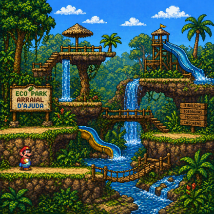
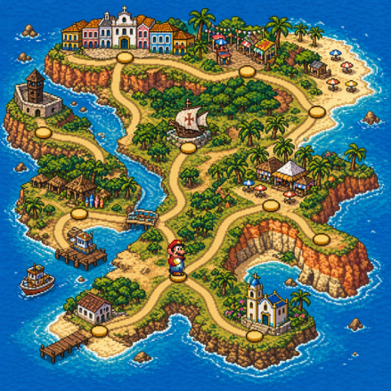
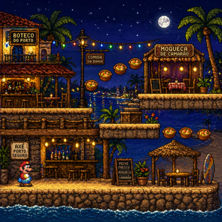

Centro Histórico
Onde tudo começou. Vista incrível, construções antigas e o famoso Marco do Descobrimento.
Essa fase começa na história do Brasil... e termina na melhor noite da sua viagem.
Porto Seguro é um dos lugares onde a história do Brasil começou.
O centro histórico, o Marco do Descobrimento e outros pontos da cidade ajudam a contar essa parte importante do passado do país.
Mas não pense que essa fase ficou presa na história! Tem praias, paisagens, movimento e lugares tranquilos para explorar. É uma mistura de história e diversão na medida certa.
Onde tudo começou. Vista incrível, construções antigas e o famoso Marco do Descobrimento.

Uma das mais bonitas do Brasil, com falésias, mar cristalino e um visual surreal.

Charmoso e cheio de vida, com ruas estilosas, boas praias e um clima mais acolhedor.

Um dos lugares mais especiais da Bahia, com casinhas coloridas, igreja histórica e um pôr do sol inesquecível.

Conhecida como um dos pontos do descobrimento do Brasil, tem águas calmas, areia clara e um clima tranquilo perfeito pra relaxar.



Experiência massa demais! O roteiro foi certeiro e deu pra curtir a vibe da Bahia de um jeito muito autêntico. Nota dez!!
Muito irado! Bem organizado e com aquela energia que só o nosso estado tem. Valeu muito a pena!
Melhor escolha que fiz! Guia top, lugares incríveis e uma recepção diferenciada. Já quero planejar a próxima!